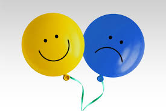

Entenda mais sobre cada transtorno
Clieque no card e saiba maisAnsiedade
A pessoa sente medo, tensão e preocupação em excesso.
Depressão

Afetam o humor, a energia e o prazer em viver.
Dislexia
Dificuldade na leitura e escrita.
Discalculia
Dificuldade com números e cálculos.
Panico
Crises repentinas de medo intenso com sintomas físicos falta de ar, palpitações.
Insônia
Dificuldade para iniciar ou manter o sono.
TDAH

Dificuldade de concentração, impulsividade e agitação.
Autismo
Dificuldades na comunicação social e comportamentos repetitivos.
Fobia Social
Medo irracional de algo específico alturas, insetos, julgamento social.
Bipolaridade
Oscilações entre episódios de depressão e de euforia.
Anorexia
Restrição alimentar severa e medo intenso de engordar.
Bulimia
Episódios de compulsão alimentar seguidos de métodos compensatórios (vômitos, jejuns).
Narcisista
Necessidade de admiração e falta de empatia pelos outros.
Esquizofrenia

Ter alucinações ouvir/ ver coisas que não existem e delírios